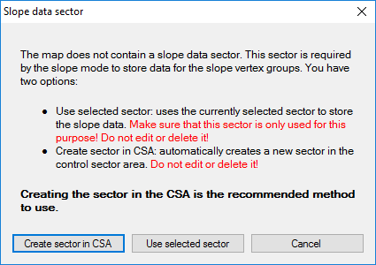
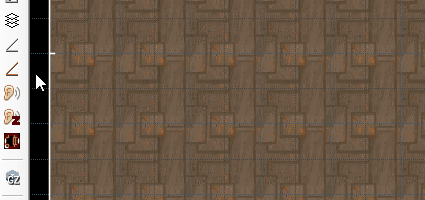
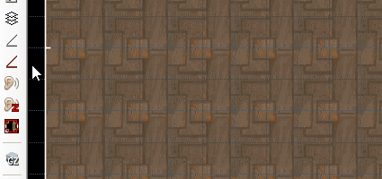
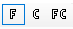
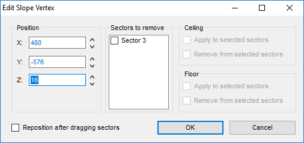

- Draw slope mode: draws slope definitions (slope vertex groups, SVG), that slope a sector using UDMF sector properties. Primary use it to make sloping 3D floors easy, but works on any sector. Only available in UDMF
- Slope mode: modify the slope vertex groups created by draw slope mode. Only available in UDMF
Menu path: Mode -> Draw Slope Mode
Action category: 3D Floor Plugin.
Default key: None.
| Action |
Default key |
UI button |
Description |
| Draw slope mode |
none |
|
Lets you draw a lope vertex group |
| Slope mode |
none |
|
Enters slope mode that lets you edit slope vertex groups |
| Draw slope vertex |
Left mouse button |
none |
Draws a slope vertex |
| Finish slope drawing |
Right mouse button |
none |
Finishes drawing a slope vertex group |
Slope Data Sector
The plugin needs a
slope data sector to store custom UDMF fields that describe the slope vertex groups. This is required for undo/redo purposes and to keep the slope vertex groups saved between mapping sessions. When you enter Draw Slope Mode and no
slope data sector is defined, you will get a pop-up asking you what to do.

The easiest and recommended way is to let the plugin create the
slope data sector in the Control Sector Area.
Note: it is important that you do not edit or delete this sector.
Draw Slope Mode
Draw Slope Mode allows you to draw slope vertex groups, that define a slope. If any sectors are selected the drawn slope will be assigned to them.
Drawing A Slope
Drawing slopes works similar to drawing geometry. You always have to draw either two or three slope vertices, forming a slope vertex group. The slope vertices in the group define the plane of your slope.
When you start drawing a slope you will see a yellow square with a black center at the mouse cursor. This is a
slope vertex. You can place it anywhere by pressing the left mouse button. Repeat this with the second and optional third slope vertex. If you only want to use two slope vertices you can finish drawing by pressing the right mouse button.
 
It is important to understand that the the slope vertex group only defines a plane - it does not say if it slopes a floor or ceiling of a sector. That also means that you can slope both floors and ceilings with a single slope vertex group, which can come in handy when sloping both normal sectors and 3D floors at the same time.
Assigning A Slope While Drawing A Slope
When you have one or more sectors selected when drawing a slope, this slope will immediately be assigned to those sectors. Wile drawing the slope you will see three buttons in the menu bar, depicting
F,
C, and
FC.

If
F is enabled (indicated by the blue border), the floor of the sectors will be sloped. If
C is enabled, the ceiling of the sectors will be sloped. If
FC is on, both the floor and ceiling of the sectors will be sloped.
Slope Mode
Slope Mode lets you modify existing slope vertex groups, and assign the slopes to sectors.
Modifying Slope Vertices
Moving Slope Vertices
Moving slope vertices works just like moving normal vertices - you can simple drag them around while holding the right mouse button. You can also select multiple vertices, either be left-clicking on them while holding the shift key, or by drawing a multi-selection around them. All selected slope vertices (indicated by their red color) will move simultaneously when being dragged around, just like any other geometry.
Editing Slope Vertices
Slope vertices can be edited by hovering the mouse cursor over one and clicking the right mouse button. This will open the
Edit Slope Vertex dialog.

In this dialog you can modify the position of the slope vertex - most notably its Z position (height). The input boxes allow relative values (like
++128 to add 128 to the current value). Having multiple slope vertices selected will modify all of them.
You can also add or remove the slope from sectors, more on that in the following sections.
Deleting A Slope Vertex / Slope Vertex Group
You can not delete a single slope vertex - you can only remove a whole slope vertex group. To do so hover the mouse over one slope vertex of the slope vertex group and press the delete key.